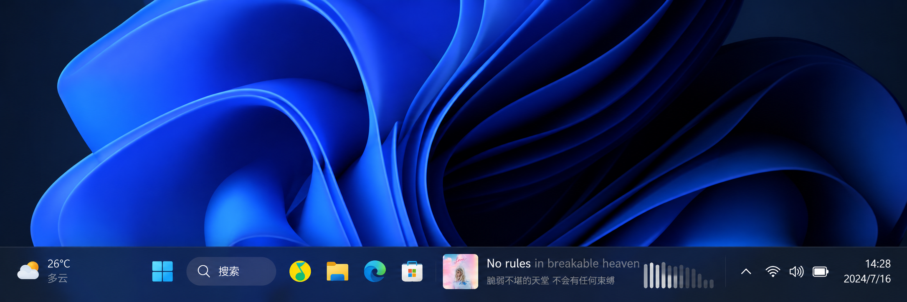
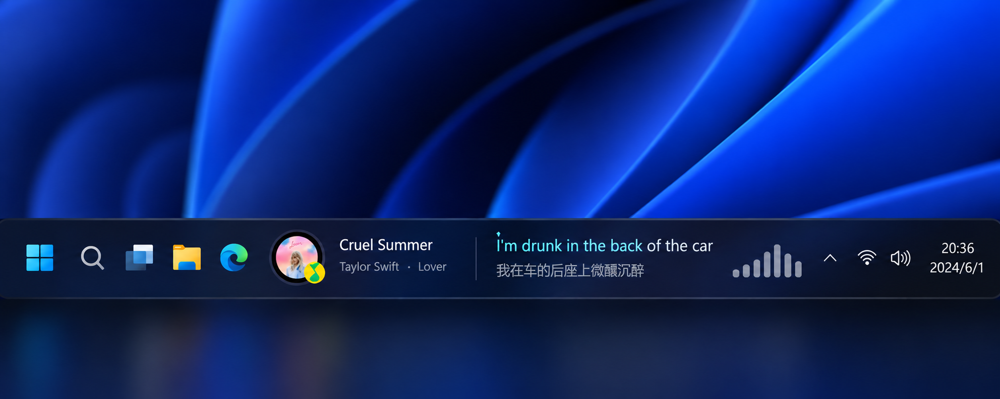
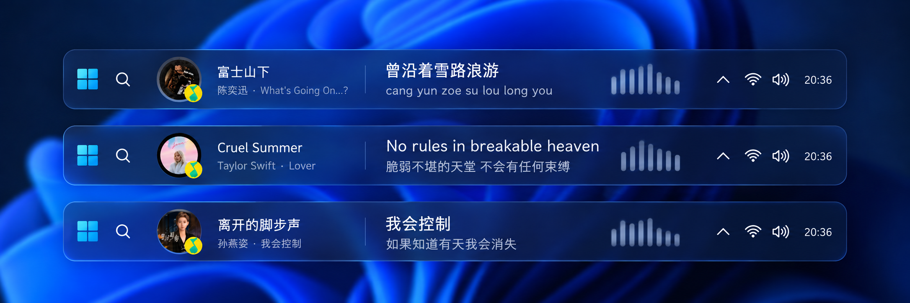
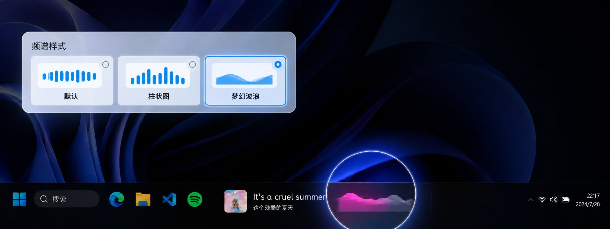
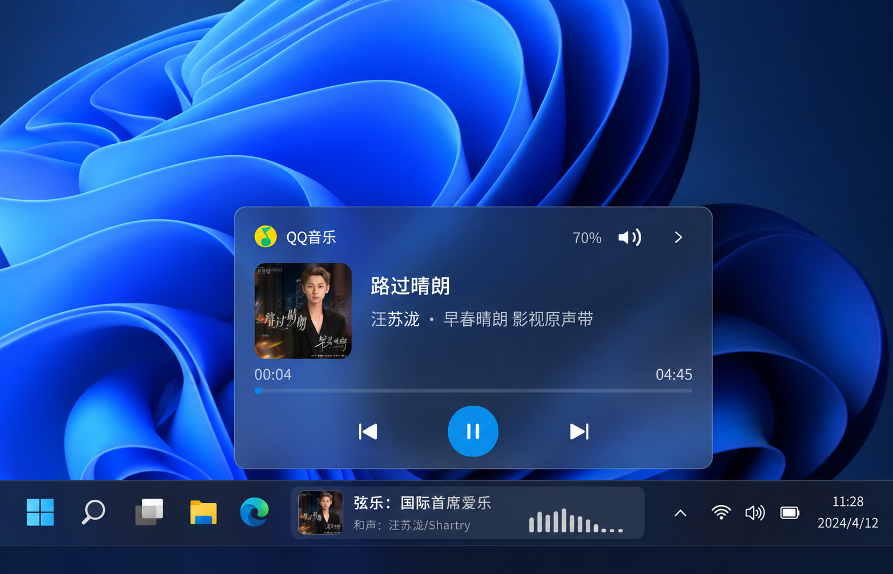
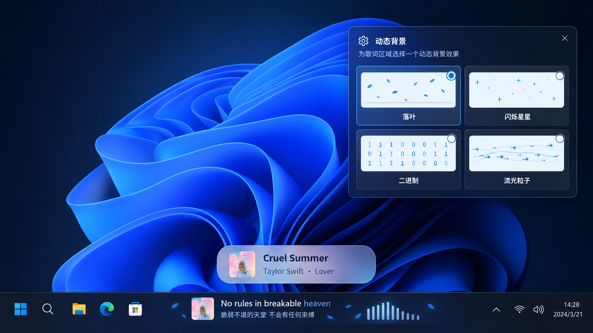
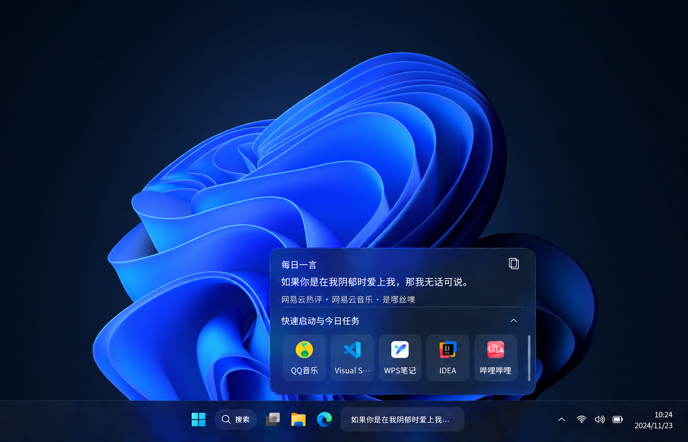

把歌词嵌入
Windows 任务栏
QQ 音乐、网易云音乐双平台自动识别，滚动歌词、逐字高亮、播放控制、音频频谱、每日一言
C++ 原生实现，无 Electron
当前最新版本

任务栏内嵌歌词
窗口作为任务栏的子窗口，外观贴近 Windows 11 原生媒体卡片：左侧圆角封面 + 歌名/歌手，右侧当前行歌词，超长自动滚动。支持任务栏上、下、左、右四边布局，左右侧自动切换竖排歌词；双锚定位并自动避开小组件、搜索框与其他任务栏插件。

翻译、罗马音与双行歌词
支持多格式歌词：逐字歌词平滑填充，LRC 整行高亮；外文歌曲可显示翻译或罗马音，辅助歌词可一键切换；没有辅助歌词时可开启双行模式，同时预览当前行与下一行。

音频频谱
基于 WASAPI 进程级回环捕获，只跟随当前播放器跳动，其他软件出声不受影响。默认、柱状图、梦幻波浪三种样式可选；梦幻波浪还能作为歌曲信息和歌词的背景波浪，颜色跟随已播放歌词。

悬浮媒体卡片与播放控制
悬浮或点击展开独立媒体卡片：封面、进度条、上一首/播放暂停/下一首一应俱全。磨砂玻璃背景可跟随专辑主色渐变，并依据背景明暗自动适配文字颜色。还能单独调节音乐应用的音量，不影响系统主音量。

切歌浮窗与动态背景
切歌时屏幕中下方弹出封面与歌曲信息，磨砂半透明、滑入滑出，可设置停留时长与位置。任务栏内容另有落叶、星星、二进制、流光粒子四种动态背景，以及按播放进度填充的专辑色进度背景，层叠效果自由组合。

空闲时也不闲着
没有播放音乐时，任务栏入口可以显示每日一言（一言 / 今日诗词 / 网易云热评）、自定义欢迎语、常用应用快速打开，还能同步滴答清单今日任务，点击复选框直接完成。三类卡片共用展开方式与磨砂外观，平滑切换。

更多功能，等你探索
手动搜索歌词
自动匹配不准时手动选词，QQ 音乐 / 网易云 / 酷狗候选，还支持进度微调。
QQ 音乐本地歌词
配置本地歌词路径后自动索引本地 QRC 缓存，离线也能命中，本地版与在线版随时切换。
外观自由定制
字体、字号、颜色、光晕与描边均可调整，深浅色模式分开配置。
智能避让布局
自动避开小组件与搜索框，空间不足时迁移空闲区，恢复后自动回归。
* Windows 10 22H2 暂不支持任务栏防遮挡
四档性能模式
正常 / 低渲染 / 完全停止 / 极简，满足日常内存需求。
运行日志面板
播放状态、歌词来源、封面加载与资源占用，一切尽在掌握。
开机自启动
无需管理员权限，登录 Windows 即自动运行，开箱即用。
自动检查更新
GitHub / Gitee 双更新源，新版本提醒、下载与安装一步到位。
三分钟上手
打开音乐
播放 QQ 音乐或网易云音乐，歌词自动出现在任务栏。QQ 音乐需在设置中开启「显示系统媒体传输控件（SMTC）」。
按喜好调整
右键托盘图标进入设置：主题、字体、频谱、悬浮卡片、切歌弹窗、每日一言，都可以自由定制。
网易云音乐需额外安装 BetterNCM 与 InfLink-rs 插件，详见 README。